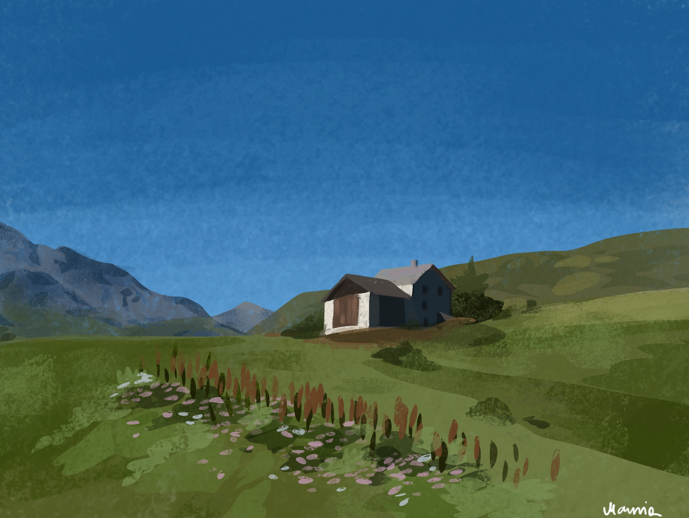

Art Portfolio

The purpose of this website
The website was prepared as a part of a project for the subject "Basics ofa Web Applications" on the Data Science 2024/25 course on AGH University of Science and Technology.
About me
Hi!
I'm Mary, a recent graduate on Social IT currently studying Data
Science and working as a UX Designer.
I've always
considered drawing to be my side hobby. My work is done mostly
digitally but my traditional mediums of choice are usually
watercolours and pencils.